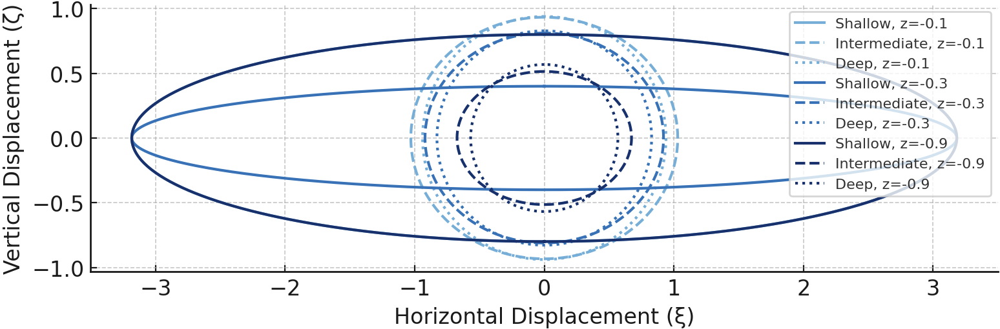

To determine the approximate form of particle orbits for shallow-water waves, substitute the following hyperbolic-function approximations into \(\boxed{\xi \equiv -a \frac{\cosh(k(z_0 + H))}{\sinh(kH)} \sin(kx_0 - \omega t),
\zeta \equiv a \frac{\sinh(k(z_0 + H))}{\sinh(kH)} \cos(kx_0 - \omega t)}\):
\[
\cosh(k(z + H)) \cong 1, \quad \sinh(k(z + H)) \cong k(z + H) \quad \text{and} \quad \sinh(kH) \cong kH
\]
The particle excursions become
\[
\xi \cong -\frac{a}{kH} \sin(kx_0 - \omega t) \quad \text{and} \quad \zeta \cong a \left(1 + \frac{z}{H}\right) \cos(kx_0 - \omega t)
\]
These represent thin ellipses, with a depth-independent semi-major axis \( a/kH \) and a semi-minor axis \( a(1 + z/H) \) that linearly decreases to zero at the bottom wall

From \(u = a\omega \frac{\cosh(k(z + H))}{\sinh(kH)} \cos(kx - \omega t),
w = a\omega \frac{\sinh(k(z + H))}{\sinh(kH)} \sin(kx - \omega t)\), the velocity field is
\[
u = \frac{a\omega}{kH} \cos(kx - \omega t) \quad \text{and} \quad w = a\omega \left(1 + \frac{z}{H} \right) \sin(kx - \omega t)
\]
which shows that the vertical component is much smaller than the horizontal component.
The pressure change from the undisturbed state is found from \(\boxed{p' = -\rho \frac{\partial \phi}{\partial t} = \rho \frac{a \omega^2}{k} \frac{\cosh(k(z + H))}{\sinh(kH)} \cos(kx - \omega t)
= \rho g a \frac{\cosh(k(z + H))}{\cosh(kH)} \cos(kx - \omega t)}\) to be
\[
p' = \rho g a \cos(kx - \omega t) = \rho g \eta
\]
where \(\eta(x,t) = a \cos[kx - \omega t]\) is the pressure change in terms of \( \eta \)
This shows that the pressure change at any point is independent of depth, and equals the hydrostatic increase of pressure due to the surface elevation change \( \eta \)
The pressure field is therefore completely hydrostatic in shallow-water waves.
Vertical accelerations are negligible because of the small w-field. For this reason, shallow water waves are also called hydrostatic waves. Any worthwhile pressure sensor mounted on the bottom will sense these waves